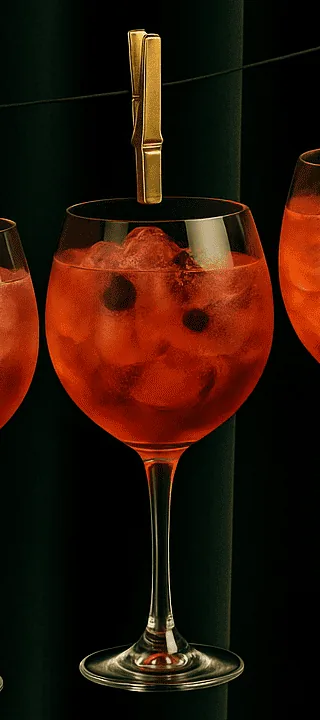
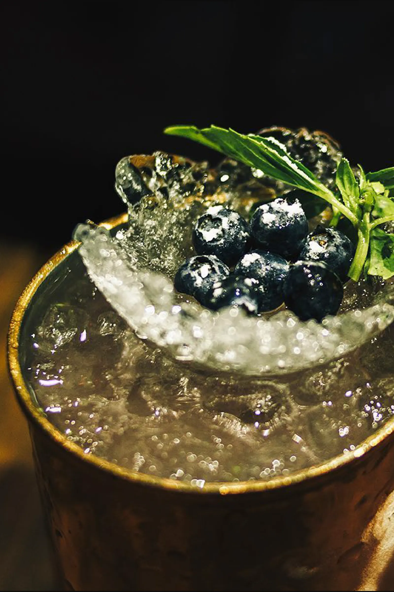
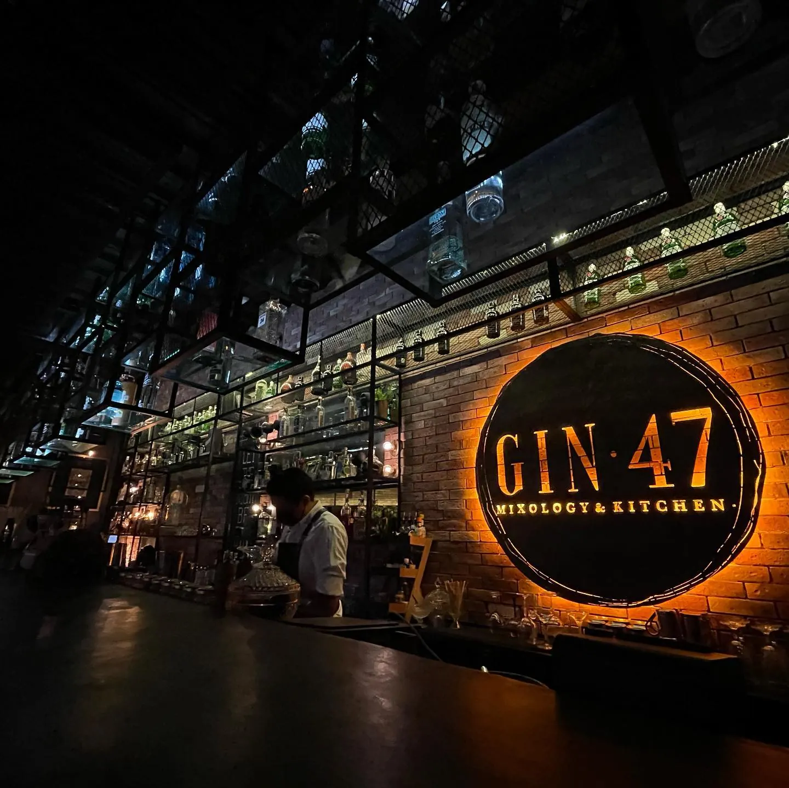

Between the juniper and the glass
Every pour is an encounter.
Mérida's first gin bar · since 2017
The exhibition
Since 2017, one bar in Mérida's historic centre has been built around one spirit. Before the seven rooms, take one glass apart.
Plate I · Anatomy
The architecture of a gin & tonic.

- 01 The copaA wide bowl for ice and aroma.
- 02 IceCold, hard and plenty of it.
- 03 Gin & tonicJuniper leads; bitterness frames it.
- 04 BotanicalsThe garnish repeats what is in the bottle.
- 05 The stemHeld here, the drink stays cold.
The exhibition: seven rooms
-
 Chapter 01Get to know the barOpen The juniper berry, the beginning
Chapter 01Get to know the barOpen The juniper berry, the beginningOrigin
Here is where it all started.
Mérida's first bar devoted to gin, open since 2017.
-
 Chapter 02Anatomy & libraryOpen Gin, botanicals, tonic, ice, the copa
Chapter 02Anatomy & libraryOpen Gin, botanicals, tonic, ice, the copaThe Gin
A gin & tonic is an architecture.
Five elements decide every glass. 51 gins from 10 countries.
-

Chapter 03Pick a baseOpen Filter by gin, mezcal, tequilaCocktails
Twenty-three drinks, signed.
Author cocktails on gin, mezcal and Yucatecan ingredients.
-
 Chapter 04Read the menuOpen Entrees, specialties, desserts
Chapter 04Read the menuOpen Entrees, specialties, dessertsKitchen
A kitchen that answers the bar.
34 plates to share, with prices in MXN.
-
 Chapter 05Local flavoursOpen Five specimen plates
Chapter 05Local flavoursOpen Five specimen platesYucatán
Yucatán, in the glass.
Xcatic, queso de bola, salbutes, xtabentún, Katún.
-
 Chapter 06Watch the nightOpen Film and gallery
Chapter 06Watch the nightOpen Film and galleryAfter Dark
The room, after dark.
A short film and twelve photographs.
-

Chapter 07Book a tableOpen Form, hours and mapReserve
This is what we pour.
Calle 47 #459, Centro · every night from 5:00 pm.
Chapter 00 — Opening
A bar built around one spirit.
Gin 47 opened in 2017 as the first bar in Mérida devoted to gin. Today it is Gin 47 Mixology & Kitchen: a gin library, author cocktails and a kitchen that cooks with Yucatecan ingredients.
This site is laid out like an exhibition. Each page is a room, numbered 00 to 07. Walk through them in order with the bar at the bottom of the screen, or jump to any room from Chapters, top right.
- Open since
- 2017
- Gins on the list
- 51
- Author cocktails
- 23
- Nights a week
- 7


Visit
Calle 47 #459 x 52 y 54, Centro, Mérida
In the Corredor Gastronómico, one block from where Paseo de Montejo begins. Sun – Wed 5:00 pm – 12:30 am · Thu – Sat 5:00 pm – 2:00 am.
Hours in Mérida time